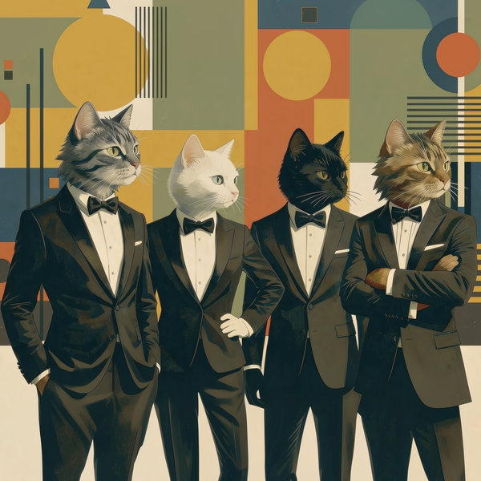
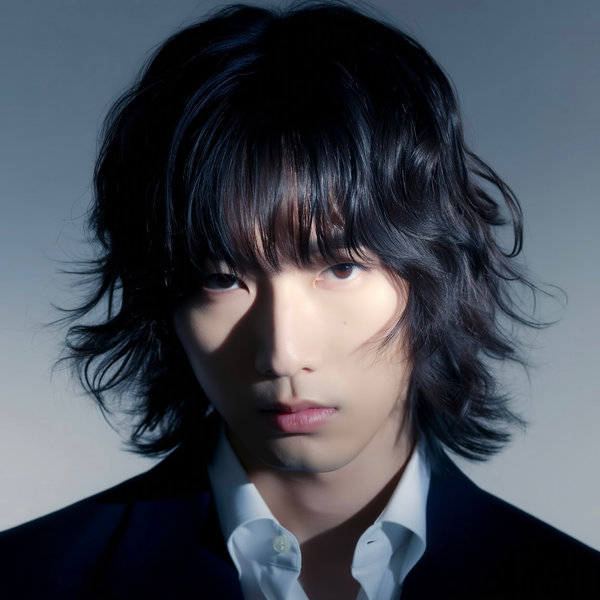
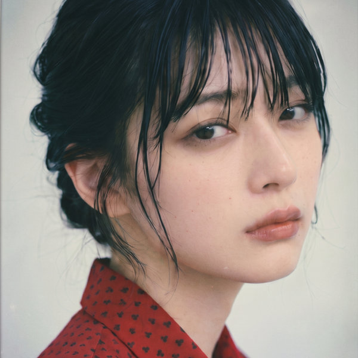

東雲こと子
KOTOKO SHINONOME
ボーカル
2026年、シングル「春を待つ」でソロアーティストとしてデビュー。7月の「君に還る世界」では「逆再生ボーカル」として話題になった。「お地球見の丘より。」の世界観に寄り添うメインボーカリスト。ときどき番組「ことこより。」も手がけている。
WORKS Ⅰ
CAST ／ 出演者
KOTOKO SHINONOME
ボーカル
2026年、シングル「春を待つ」でソロアーティストとしてデビュー。7月の「君に還る世界」では「逆再生ボーカル」として話題になった。「お地球見の丘より。」の世界観に寄り添うメインボーカリスト。ときどき番組「ことこより。」も手がけている。
※AIで生み出した架空の人物です。
個人ホームページ「お地球見の丘より。」で発表していた曲を、当時のMIDIの音のまま残しています。
WORKS Ⅱ
整うだけでは足りないあなたへ、心ゆらす夜ジャズ。
夜空の広がりと星雲のきらめきから生まれた、4猫編成のジャズバンドが、居月ナオの曲をドライブ感のあるジャズに編み直します。
MEMBERS ／ メンバー

夜空の広がりと星雲のきらめきからインスピレーションを受けた、4猫編成のジャズバンド。
※AIで生み出した架空のジャズバンドです。
WORKS Ⅲ
NOW PREPARING
まもなく、
幕があがります。
雨月座の作品は、これから順に公開していきます。
CAST ／ 一座

KAI AMEMIYA
座長
2023年に俳優としてデビューし、舞台を中心に活躍。2026年1月、短編アートフィルム「渦」で主演を務める。「雨月座」の座長。趣味はバスケットボール観戦。

YURA
役者・歌
2026年、シングル「沈むカラダ」でソロアーティストとしてデビュー。「雨月座」では役者としても活躍する。
※AIで生み出した架空の人物です。
PROFILE
高校時代、吹奏楽部での経験に刺激を受けながら作曲を始める。1997年に初めてコンテストでの受賞を経験し、それをきっかけに2000年から約10年、個人ホームページ「お地球見の丘より。」にて音楽活動を行なった。現在は生成AIの力を借りながら、YouTubeを中心に活動を続けている。
猫とアマガエルが好き。
AWARDS ／ 受賞・上映
CHANNELS ／ チャンネル
お地球見の丘より。YouTube ↗ NEBULA CLAWS QUARTETYouTube ↗ 雨月座YouTube ↗CONTACT ／ お問い合わせ
現在はお仕事の依頼は受けておりません。